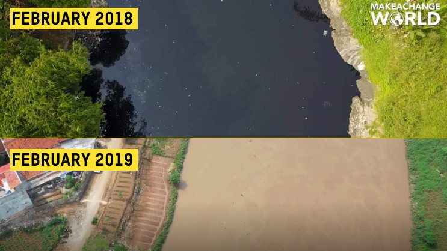
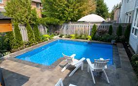
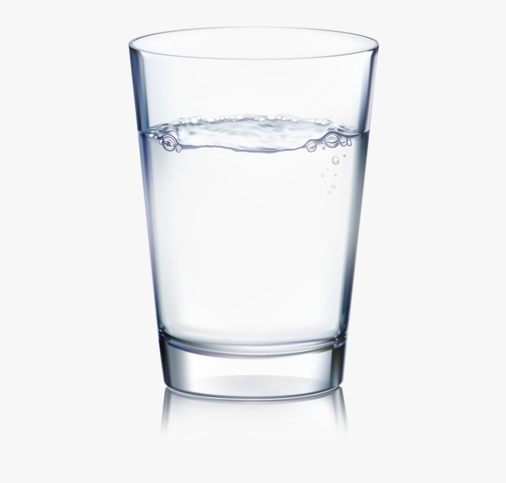
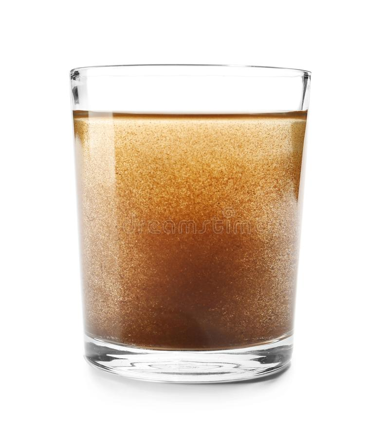
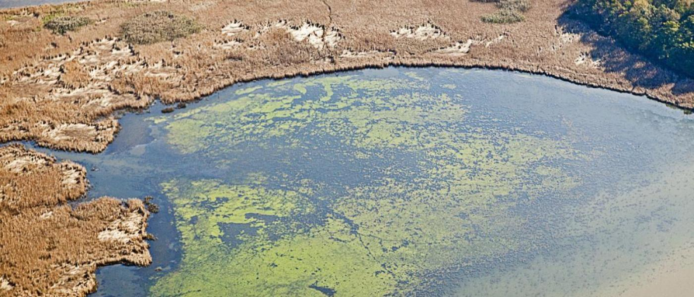

Water pollution is making water undrinkable, usually because of human activities, which in most cases will affect other people. Water pollution reduces the ability of the body of water to provide the ecosystem services that it would otherwise provide to us.
This is the Citarum River in Indonesia. In the span of 1 year, the previously clean water became a garbage can in the ocean. Textile factories nearby dump their untreated waste into these waters. Half of ALL THE WASTE from Bandung and Jakarta are dumped into this river. The Citarum River also contains high levels of mercury, manganese, chromium, human waste, cadmium, and lead.
CONSEQUENCES could be dangerous to human life, causing issues such as Skin Cancer.
The Un Defines Goal 6.6 as "Protect and restore water-related ecosystems, including mountains, forests, wetlands, rivers, aquifers and lakes." What that means is we want to protect all water bodies. If we look in detail, the UN defines the action item as "Change in the extent of water-related ecosystems over time".
Subpoints of this goal
Three things are looked for :
| Space | How big is this pool of water? |  |
|---|---|---|
| Quantity | How much water is here? |  |
| Quality | How safe is the water? Is it safe to drink? Is it contaminated? |  |
Especially Quality! A lot of people in the world still don't have clean water!
Got you thinking? Would you like to help? Click below.
The UN defines goal 14.1 as "Prevent and significantly reduce marine pollution of all kinds, in particular from land-based activities, including marine debris and nutrient pollution". Let us break this down into Marine Debris and Nutrient Pollution, and talk about these seperately.
Subpoints of this goal
Marine debris is defined as any solid material that is manufactured or processed and, intentionally or unintentionally, disposed of or abandoned into the marine environment or the Great Lakes.
| Rank | Item | Amount |
|---|---|---|
| 1 | Cigarette Butts | 2, 412, 151 |
| 2 | Food Wrappers | 1, 739, 743 |
| 3 | Plastic Bottles | 1, 569, 135 |
| 4 | Plastic Bottle Caps | 1, 091, 107 |
| 5 | Grocery Bags | 757, 523 |
| 6 | Straws | 643, 562 |
What is the problem with Marine Debris?
There are a lot of possible problems. Let us look at the table below.
| Importance | Problem | Importance? |
|---|---|---|
| High | Animal Deaths | Animals are life, just like humans. Their way of life in the ocean is being impacted by us, some more than others. Where some may not be impacted, some animals in the ocean may die because of the pollution getting in their body. |
| High | Human Health and Safety | Some marine animals that fisherman catch may have plastic inside them. If not properly taken care of, the humans that eventually eat the animal could develop severe ilnesses. |
| Medium | Navigational Hazards | Every year, hundreds of small/medium boats get trapped in the water, unable to go forward because of all the plastic in the ocean in front of them, blocking the path. Sometimes, boats could even crash because they did not see the hazards. |
| Medium | Quality of Life in Coastal Communities | If you live beside a body of water, some would be luckier than others. In some places, water is a beautiful thing, with light blue colours that are fascinating. Other times, you get a place where you can't even see the water because of all the plastic. This can also cause serious issues, such as these plastics making their way on land, or continaminating the otherwise drinkable water. |
| Low | Tourism | For some places, tourism is the only way they can keep the place in good shape. When plastic pollution gets to a place, it makes tourists not want to visit the place anymore! That could cause the whole place to fall apart, which could be dangerous! |
Got you thinking? Would you like to help? Click below.
Nutrient Pollution, unlike the section above is not caused by humans. However, it does have a huge impact and is something we could eliminate. Nutrient Pollution happens when a water gets too many nutrients, including nitrogen and phosphorus. This causes a huge growth in Algae. Algae blocks light that is needed for plants, such as seagrasses, to grow. That in turn can kill sea animals such as crabs.
You can see here one such example of nutrient pollution. We see the huge growth in Algae, blocking the sunlight that is needed to let plants underneath the ocean live. If left untreated, the fish and other marine animals in this body of water will die because of the food supply slowly being eliminated.
| Link # | Whats the Difference? | What does that mean? |
|---|---|---|
| 1 | Who caused it? | While humans can play a part in achieving both goals, the cause of the goal being needed are different. In goal 6.6, the majority of the problem is because of the climate, not humans. As the goal action specifically mentions, Change in Water-related ecosystems over time. Of all the change that occurs, only a fraction will be due to humans. Other factors including climate change or invasive species could attribute to the majority of the change. However, exactly half of goal 14.1 is caused by humans. Marine Debris is caused almost entirely by humans. However, nutrient pollution is not! As you can/have read, Nutrient Pollution happens when a water gets too many nutrients. This is not caused by humans but by the enviorment itself. However, both these goals can be SOLVED by humans, using our own means of prevention and restoration. |
| Link # | Whats the Similarity? | What does that mean? |
|---|---|---|
| 1 | Water Pollution | Water Pollution is the contamination of a previously fine water body with plants or pollutants. Plants that are harmful include algae, which can seriously deteriorate a water-body as you can see in the earlier tabs pictures. The other method of water pollution is human caused, steming from waste that we produce (such as cigarette butts). Interestingly, both these goals could be seriously progressed on if we just got rid of human water pollution. Half goal 6.6 would be solved, and goal 14.1 would only have to worry about the "restore" part and no longer protect. That is a very important tool we have to potentially solve these two goals. |
| 2 | Water-based | Goal 6.6 directly mentions protecting and restoring water-related ecosystems. The entire goal is focused around making sure the water bodies contain lots of clean water at all times. A water-body is seen as good if it is clean, if there is a lot of water insie, and if the water body is large. Goal 14.1 on the other hand focuses on water pollution. As mentioned above, water pollution is the contamination of a water source with material that before would be drinkable clean water. While this is more specific (making sure the water body is clean), the goal is centered around water. In some ways, we can see Goal 14.1 as a subset of Goal 6.6, containing similar information as one of the points in Goal 6.6 (clean water). |
Quiz for goal 6.6
Quiz for goal 14.1
Quiz for EVERYTHING! [new]
A Climate word search!
Thats it for now!
Donate
Or... Donate to an established brand.
1) The Ocean Cleanup